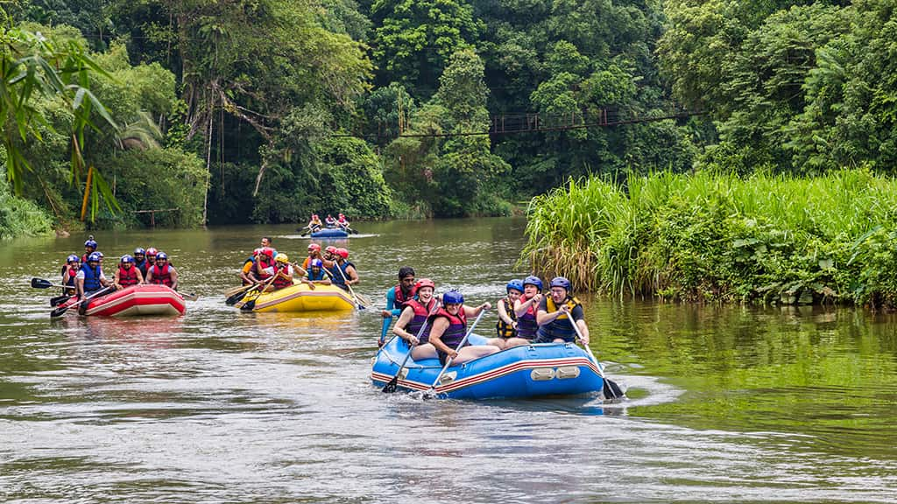

Join Us in One of Our Adventures!

Jaguar Rapids is a moderately challenging Class III trip featuring steady rapids and technical turns. Ideal for participants with some rafting experience, this route offers exciting wave trains balanced with calm pools.

Thunder Gorge Run flows through a narrow canyon with Class II–III rapids. Suitable for beginners with a guide and families with older children, it combines splashy sections with calmer scenic stretches.

Emerald Canyon Rush features clear waters and mild Class II rapids with occasional Class III sections. A great introduction to whitewater rafting for first-time adventurers.

Whitewater Fury Pass includes continuous Class III–IV rapids and narrow passages. Recommended for experienced rafters looking for a more technical and physically demanding adventure.

Serpent River Descent winds through forested hills with mostly Class II rapids and occasional Class III sections. Ideal for mixed-experience groups seeking a scenic and balanced rafting trip.